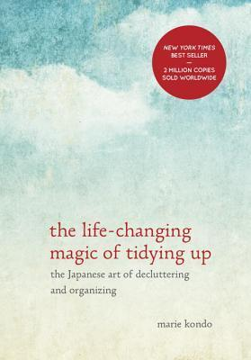

"The Life-Changing Magic of Tidying Up: The Japanese Art of Decluttering and Organizing"
- Read on 2022-08-31
- Rating: ️️️️️
- Format: 🎧 (4 hours 50 minutes)
I wanted to see what all the fuss was, so I watched the show, and read this book. Her methodology can answer seemingly any question you might have about tidying up. But I read this more in the style of any other self-improvement book: find a nugget or two that I can actually apply long-term, and keep moving forward. For me, the thing I mostly took away from this book was to be intentional in your decision to keep things. The idea of "sparking joy" is interesting, and as good of a decision point as anything around which to focus in keeping something. In the perfect timing of me needing to clean out a garage, I adopted a variety of the elements of this book, and will likely keep those two principles around.
- Prior: Midnight in Chernobyl
- Next: The Coddling of the American Mind